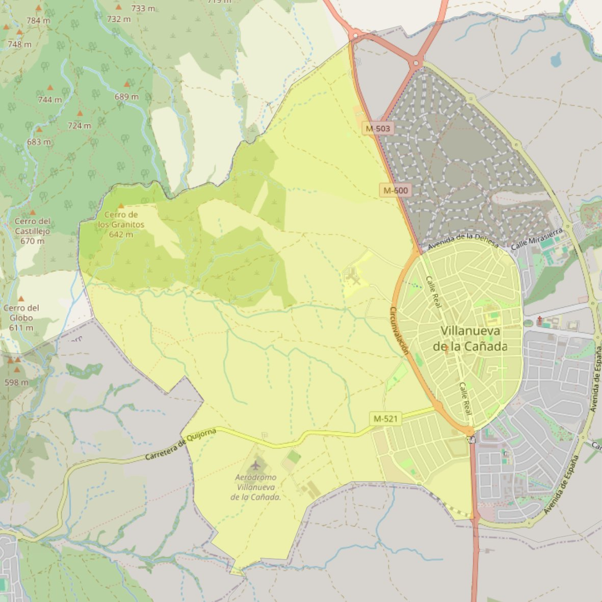

Santiago Apóstol

- Arciprestazgo
- Villaviciosa de Odón
- Población
- Villanueva de la Cañada
- Dirección postal
- c/ Goya, 2
- Código postal
- 28691
- Extensión
- 9,86 km² (986 ha)
- Teléfono
- 918 197 354
- Correo electrónico
- santiagoapostol-villanuevadelacanada@diocesisgetafe.es